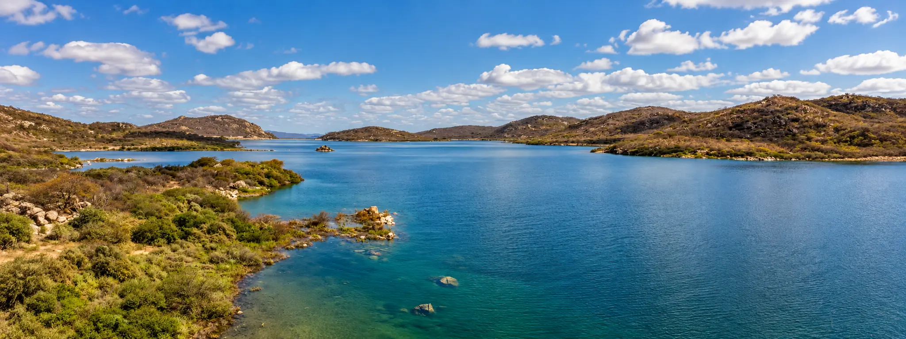
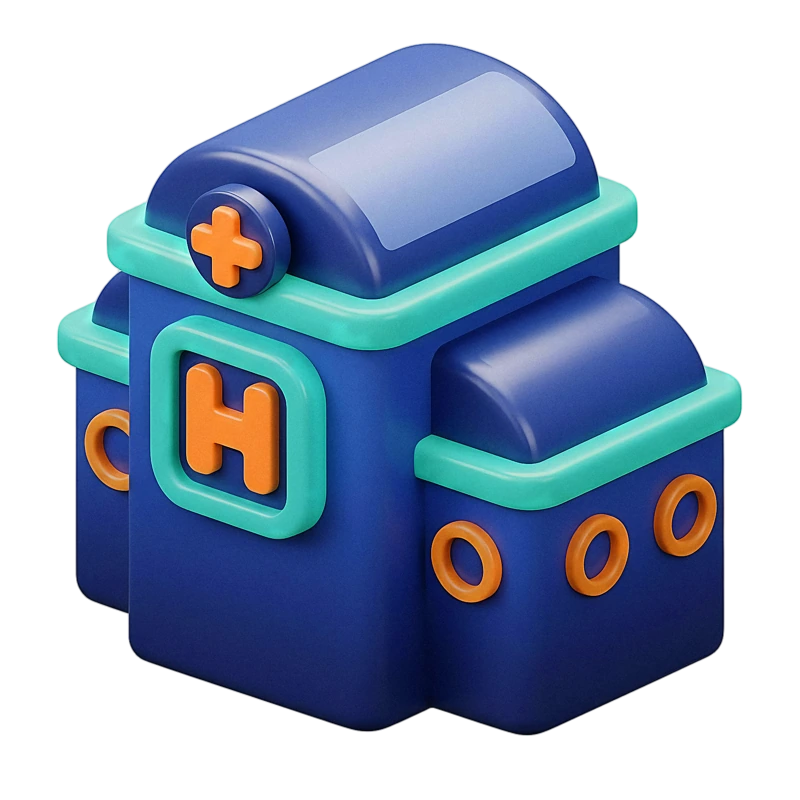

Nosso compromisso
Sustentabilidade
Cuidar da água, das pessoas e do futuro do Sertão.


Água, meio ambiente e comunidades
Na VITA Sertão, a sustentabilidade é a base que orienta as nossas decisões e operações.
Atuar no Sertão exige um compromisso profundo com a preservação da água, a proteção do meio ambiente e o fortalecimento das comunidades.
Trabalhamos diariamente para transformar a infraestrutura de saneamento em um motor de desenvolvimento sustentável, gerando impactos positivos para a saúde pública, para o bioma Caatinga e para o futuro das próximas gerações.
Nossos pilares de atuação
Como atuamos
Nossos pilares de atuação
-

Preservação Ambiental e Proteção da Caatinga
O Sertão possui uma biodiversidade única e recursos hídricos extremamente valiosos. Nossa atuação na coleta e no tratamento adequado de esgoto previne a poluição do solo, dos rios, riachos e lençóis freáticos. Além disso, incentivamos práticas que protegem a vegetação nativa e as áreas de recarga hídrica, fortalecendo a resiliência da região diante das estiagens.
-

Gestão Eficiente e Segurança Hídrica
Em um clima semiárido, cada gota conta. A VITA Sertão foca na eficiência operacional para combater o desperdício e os vazamentos nas redes de distribuição e otimizar o uso da água tratada. Buscamos também fomentar estudos e iniciativas de reúso de efluentes tratados, permitindo que a água já utilizada ganhe novas utilidades na agricultura, na indústria ou em serviços urbanos.
-
Desenvolvimento Social e Cidadania
Saneamento básico é sinônimo de dignidade, saúde e oportunidade. Levamos redes de água e esgoto a milhares de famílias, priorizando a inclusão social e o bem-estar comunitário. Desenvolvemos programas de educação ambiental nas escolas e comunidades, incentivando o uso consciente da água e a importância da conexão às redes públicas de saneamento.
-

Inovação e Transparência
Adotamos tecnologias de ponta e processos eficientes no gerenciamento dos serviços de saneamento. Atuamos com ética, governança sólida e transparência em todas as etapas, prestando contas à sociedade e construindo parcerias duradouras com os municípios atendidos.
Nosso compromisso com o futuro
Nosso compromisso com o futuro
Garantir água limpa na torneira e devolver efluentes tratados à natureza é cuidar do ciclo da vida no Sertão. Ao unir tecnologia, responsabilidade social e respeito ao meio ambiente, a VITA Sertão constrói um caminho para que o desenvolvimento regional aconteça em harmonia com a preservação dos nossos recursos naturais.